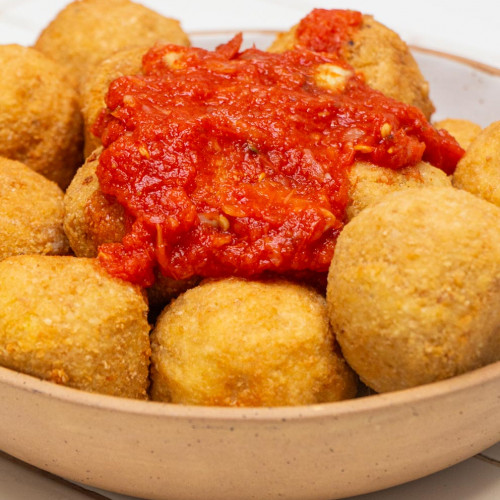

Receta del día
Hay platos que tienen ese encanto especial de la cocina casera: simples, sabrosos y capaces de reunir a toda la familia alrededor de la mesa. Las bombas de papa son uno de esos clásicos que nunca fallan.
Crujientes por fuera, suaves y cremosas por dentro, las bombas de papa son una verdadera delicia que conquista a todos. Esta receta, de espíritu casero y alma callejera, es perfecta para cualquier ocasión: como entrada, picada, plato principal o incluso para llevar a una reunión. Versátiles y llenas de sabor, se pueden rellenar con carne, queso, jamón o lo que más te guste, adaptándose a cada paladar.
Además de ser irresistibles, las bombas de papa son una excelente manera de aprovechar puré que te haya sobrado o de transformar ingredientes simples en algo verdaderamente especial. Prepararlas es más fácil de lo que parece, y el resultado vale cada minuto en la cocina.
A continuación te contamos todo lo que tenés que saber para hacerlos en casa.
Ingredientes
Antes de comenzar, es necesario tener en cuenta que para cocinar las bombas de papa, se requieren los siguientes ingredientes:
- Papa
- Huevos
- Manteca
- Condimentos a gusto (sal, pimienta, nuez moscada)
- Quesos
- Pan rallado
- Harina
Instrucciones
Para que la receta salga correctamente, se deben seguir ordenadamente los siguientes pasos:
- Hervir las papas.
- Dejar enfriar.
- Pisar las papas junto con un poco de manteca.
- Condimentar y agregar el huevo.
- Hacer bolitas y rellenar con queso.
- Empanar (pasar por harina, huevo y pan rallado).
- Freír en aceite bien caliente.
Video de ayuda
Y si preferís un video antes que texto, esto es para vos...
Resultado
Si seguiste la receta que te mostramos, algo similar a esto se debería ver tu preparación.
Esperamos te haya salido bien y la disfrutes.
Nos alegra que hayas llegado hasta aquí y esperamos que esta receta haya despertado tu creatividad en la cocina. Cocinar no es solo seguir pasos: es ponerle amor, disfrutar el proceso y compartir buenos momentos alrededor de la mesa.
Cada ingrediente, cada técnica, cada detalle cuenta… y nos encanta poder ser parte de tu experiencia culinaria.
¿Te animaste a probarla? Nos encantaría saber cómo te quedó. Puedes dejar un comentario, compartir tu foto en redes sociales o contar tu propia versión del plato. ¡La cocina también se trata de compartir!
Gracias por acompañarnos en esta deliciosa aventura.
¡Nos vemos en la próxima preparación!

Otras recetas
Si seguiste la receta que te mostramos, algo similar a esto se debería ver tu preparación.
Esperamos te haya salido bien y la disfrutes.
Nos alegra que hayas llegado hasta aquí y esperamos que esta receta haya despertado tu creatividad en la cocina. Cocinar no es solo seguir pasos: es ponerle amor, disfrutar el proceso y compartir buenos momentos alrededor de la mesa.
Cada ingrediente, cada técnica, cada detalle cuenta… y nos encanta poder ser parte de tu experiencia culinaria.
¿Te animaste a probarla? Nos encantaría saber cómo te quedó. Puedes dejar un comentario, compartir tu foto en redes sociales o contar tu propia versión del plato. ¡La cocina también se trata de compartir!
Gracias por acompañarnos en esta deliciosa aventura.
¡Nos vemos en la próxima preparación!
Si te gustó esta, tenemos miles de recetas más para vos. Estas son solo algunas de ellas: ñoquis sardos, risotto de triple sésamo o sanguchipa.